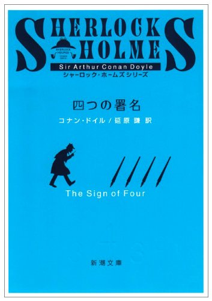
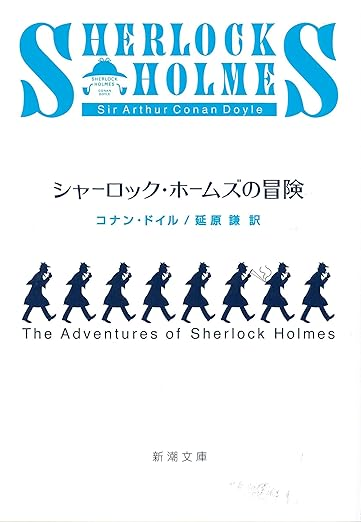
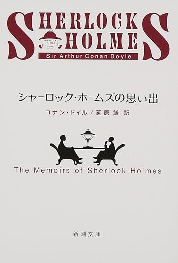
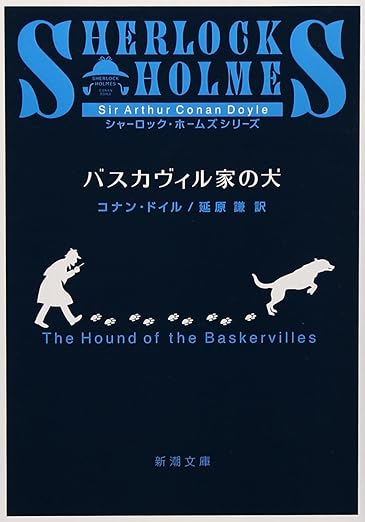
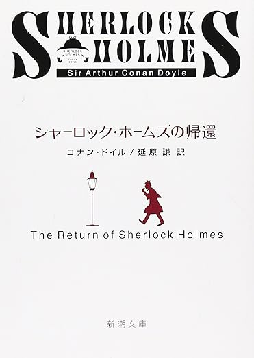
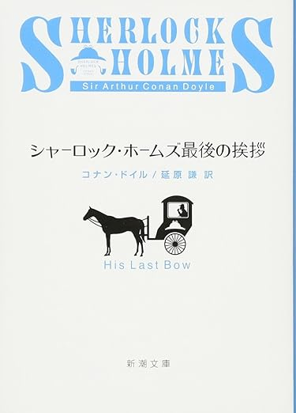
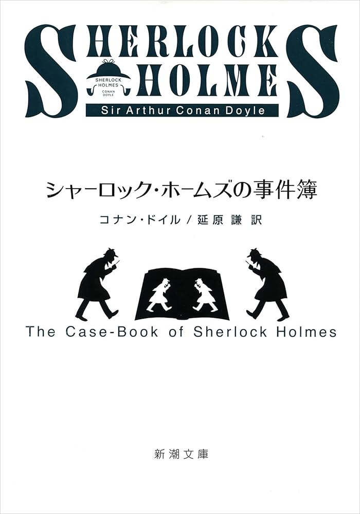

緋色の研究
シャーロック・ホームズとワトソンが出会う、すべての始まりとなる記念すべき一作。 事件の背景に大胆な構成を持ち込み、単なる推理小説にとどまらない物語性が印象的です。 ホームズの思考法やキャラクターの魅力を知るうえで、まず読んでおきたい作品です。
シャーロック・ホームズを生み出した作家として有名です。 観察力と論理によって真実に迫る、王道の探偵小説を楽しめます。
シャーロック・ホームズとワトソンが出会う、すべての始まりとなる記念すべき一作。 事件の背景に大胆な構成を持ち込み、単なる推理小説にとどまらない物語性が印象的です。 ホームズの思考法やキャラクターの魅力を知るうえで、まず読んでおきたい作品です。

宝と陰謀が絡み合うスリリングな展開が魅力の長編作品。 ワトソンの恋愛要素も描かれ、物語に人間味と温かみが加わっています。 冒険小説的な要素も強く、テンポよく楽しめる一冊です。

短編集としてホームズの多彩な推理が堪能できる代表的な作品集。 日常に潜む不可解な事件を、鮮やかな観察力と論理で解き明かしていきます。 初めてホームズを読む人にもおすすめできる、完成度の高い一冊です。

より深みのある事件や、ホームズの過去に触れる物語が収録された短編集。 宿敵モリアーティ教授との対決が描かれ、シリーズの重要な転換点となっています。 緊張感とドラマ性が高まり、物語に一層の重みを与えています。

霧に包まれた荒野と伝説の怪物が絡む、シリーズ屈指の名作長編。 怪奇的な雰囲気と論理的推理が絶妙に融合し、独特の緊張感を生み出しています。 ホームズ作品の中でも特に人気が高く、読み応えのある一冊です。

一度は姿を消したホームズが再び活躍を見せる、待望の短編集。 復活後も変わらぬ鋭い推理と、さらに洗練された事件の数々が楽しめます。 ファンにとっては感慨深く、シリーズの魅力を再確認できる作品です。
複雑な構成と重厚なストーリーが特徴の長編作品。 事件の裏に隠された組織や過去の因縁が、徐々に明らかになっていきます。 読み進めるほどに深まる謎と緊張感が魅力の、完成度の高い一作です。

ホームズの晩年を感じさせる落ち着いた雰囲気の短編集。 時代背景の変化や社会情勢も反映され、これまでとは異なる味わいがあります。 静かながらも余韻の残る物語が多く、シリーズ後期の魅力が詰まっています。

シリーズ最終期の短編集で、円熟したホームズの姿が描かれます。 これまでの集大成とも言える内容で、さまざまなタイプの事件が収録されています。 派手さは控えめながらも、長年のファンに深く響く一冊です。